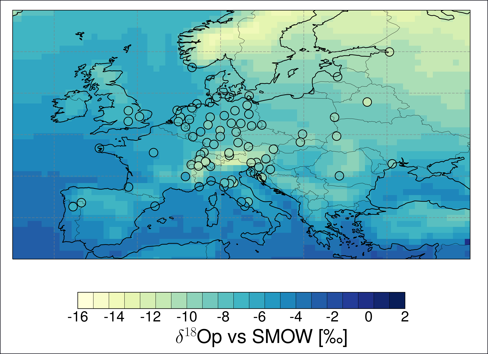

Practical examples
The package has been used in these projects (involving actual weather stations).
1. Downscaling of precipitation and temperature for weather station located in the Neckar catchment, Southwestern Germany 🌎
This illustrative case study of downscaling temperature and precipitation in a catchment located in southwestern Germany was described in the package description paper of pyESD (Boateng and Mutz, 2023). All the modeling and analysis scripts are available on GitHub (PyESD/example/Neckar) and also on Zenodo (supporting material). For more details about the findings, kindly refer to (Boateng and Mutz, 2023).”

2. Downscaling of precipitation for synoptic weather stations in Ghana 🌍 using Stacked Generalization
This project provides station-based precipitation downscaling for the 20 synoptic weather stations (obtained from the Ghana Meteorology Agency) in Ghana. The project highlights the importance of ensemble learning included in the pyESD package
due to the difficulty of predicting precipitation by climate models and its representation in reanalysis datasets. We used stacking ensembles for model training and compared the projected downscaled future projections to the raw outputs of RCMs and the GCMs. All the modeling scripts are available on GitHub (PyESD/example/Ghana). Details about the results are under preparation but were presented at last year’s AGU (link):

Opportunities and challenges of empirical statistical downscaling in Ghana (under preparation to be submitted to AGU Earth’s future).
3. Station-based statistical emulators for stable oxygen isotopes
The PP-ESD framework is evaluated for its performance in predicting station-based stable oxygen isotopes in precipitation for the GNIP stations across Europe. This project plans to use pyESD as a statistical emulator to predict the oxygen isotope and compare its performance to iso-GCM simulation. All the modeling scripts will be publicly available.
{kind=link}